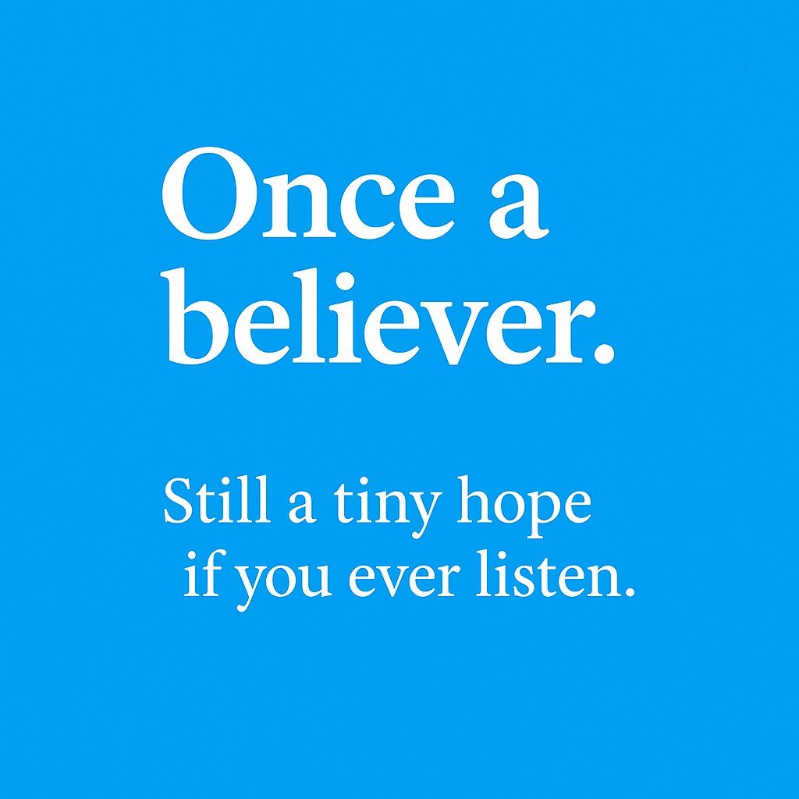

ผู้นำจะยืนอยู่ได้ด้วยอุดมการณ์อย่างเดียวไม่ได้ ถ้ายึดหลักการจนทิ้งเป้าหมาย ก็เหลือเพียงภาพลักษณ์ที่ไม่พาประเทศไปไหน
{kind=link}

โพสต์นี้สั้นแต่แรงมาก เพราะผู้เขียนเริ่มจากการวิจารณ์วัฒนธรรมความมักง่ายในชีวิตประจำวัน ตั้งแต่การขี่รถบนทางเท้าจนถึงการขับรถสวนเลน แล้วโยงต่อไปถึงคำถามที่ใหญ่กว่านั้นว่า ในสังคมที่คุ้นกับการเอาง่ายเข้าว่า เราจะคาดหวังอะไรจากการเมืองและประชาธิปไตยได้มากแค่ไหน
จากนั้นผู้เขียนหันไปวิจารณ์ผู้นำที่ “หล่ออย่างเดียว” คือมีอุดมการณ์หรือภาพจำที่ดูดี แต่ไม่สามารถแปลงหลักการให้กลายเป็นการนำพาเชิงปฏิบัติได้จริง จุดนี้ทำให้โพสต์ไม่ได้ตำหนิสังคมอย่างเดียว แต่ตำหนิ ภาวะผู้นำที่ไม่ยอมเผชิญความจริง ด้วย
แกนของโพสต์นี้อยู่ที่การชี้ว่า ปัญหาทางการเมืองไม่ได้แยกขาดจากวัฒนธรรมในชีวิตประจำวัน หากผู้คนจำนวนมากเคยชินกับการละเมิดกติกาเล็ก ๆ อยู่แล้ว การจะสร้างการเมืองที่ตั้งอยู่บนหลักการสูงส่งโดยไม่แตะวัฒนธรรมพื้นฐานของสังคม ย่อมเป็นเรื่องยากมาก
อุดมการณ์จำเป็น แต่ถ้ากอดไว้จนละทิ้งเป้าหมาย ก็ไม่ใช่ภาวะผู้นำ
ประโยคที่คมที่สุดในโพสต์คือการยอมรับว่าอุดมการณ์ต้องมี แต่ถ้ากอดไว้จนละทิ้งเป้าหมาย ก็ไม่สมควรเป็นผู้นำ นี่เป็นคำวิจารณ์แบบ pragmatic ที่ไม่ปฏิเสธหลักการ แต่เตือนว่าหลักการจะมีความหมายก็ต่อเมื่อมันพาไปสู่ผลลัพธ์ที่ต้องการได้จริง
มุมนี้สอดคล้องกับข้อเขียนหลายชิ้นของผู้เขียนที่วิจารณ์ระบบจากมุมโครงสร้าง คือความดีหรือความถูกต้องเชิงนามธรรมเพียงอย่างเดียวไม่พอ หากไม่ถูกออกแบบให้สัมพันธ์กับแรงจูงใจ พฤติกรรม และเป้าหมายปลายทาง
ประชาธิปไตยไม่พังเพราะอุดมการณ์มากไปอย่างเดียว แต่พังเพราะไม่มีใครทำให้อุดมการณ์เชื่อมกับโลกจริง
เมื่อผู้เขียนตั้งคำถามว่า “คุณจะหวังอะไรจากประชาธิปไตย ในเมื่อเขาถามแค่ว่าจะมีเงินแจกไหม” เขาไม่ได้เพียงประชดประชาชน แต่กำลังชี้ให้เห็นปัญหาของประชาธิปไตยที่ถูกตัดทอนจนเหลือการแลกผลประโยชน์ระยะสั้น หากผู้นำยังคงสื่อสารด้วยท่าทีเดิมโดยไม่ปรับยุทธศาสตร์ ก็แทบไม่เหลือพื้นที่ให้ความหวังเดินต่อได้
ดังนั้น บทความนี้แม้จะสั้น แต่จริง ๆ เป็นการเตือนทั้งสังคมและผู้นำว่า ถ้าไม่ยอมเปลี่ยนวิธีเล่นเกม ก็อาจเหลือเพียงภาพจำทางการเมืองที่ดีในอดีต โดยไม่มีอนาคตเชิงปฏิบัติรองรับ